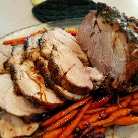

Rosated Pork

If you like jucy and tender pork, definetly check out this delicous and easy to make
roasted pork recipe. It is a perfect treat for familiy and friends on a weekend and holiday.
Ingredient
- 1 tbsp. cup honey
- 1/3 cup soy sauce
- 1/4 cup Kosher salt, 1 tbsp black pepper to taste
- 1 tbsp. chopped rosemary
- 1 tbsp. garlic power
- 2 lb. pork shoulder
- 1/2 lb. baby carrots
Steps
- Mix honey, soy sauce, salt, black pepper, and rosemary in a medium bowal. Spread mixture
all over the pork shoulder, and massage the pork.
- Set the seasoned pork aside for 15 minutes, and preheat the oven to 350 degrees F(175 degreees C)
- Place the pork in a roasting pan, and freely place baby carrots around the pork.
- Bake uncovered pork for 1 hour and 20 minutes in the oven to a minimum internal temperature of 180 degrees
F (82 degrees C).
- Remove the pork from oven, and baste with melted margarine and dippings. Cover with aluminum foil, and allow
rest about 20 minutes before serving.